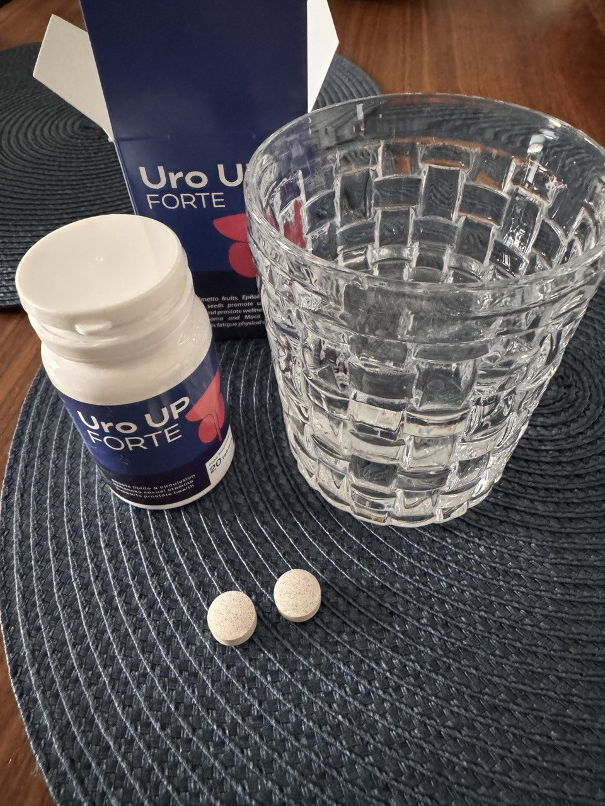
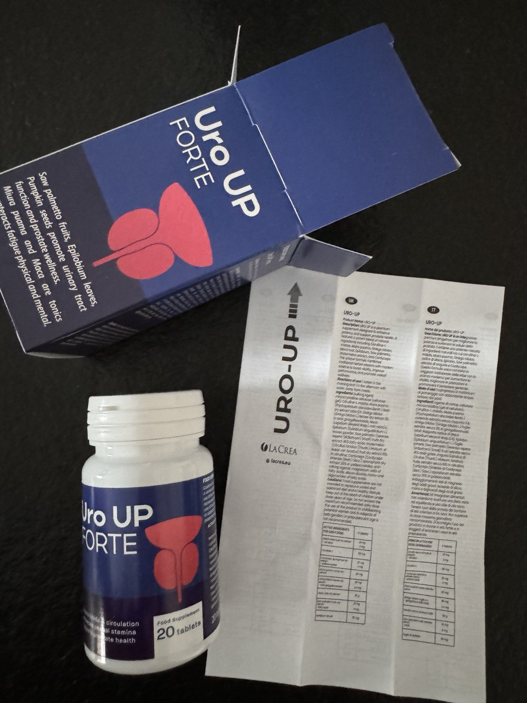

Una uróloga contó cómo sufren las esposas de personas impotentes. ¡Los hombres deberían tener vergüenza!
Ximena Sánchez: «La mayoría de las mujeres permanecen fieles a sus maridos incluso cuando sus amantes se vuelven impotentes. Esto exige grandes sacrificios de los que los hombres ni siquiera son conscientes»
La destacada uróloga de España, Ximena Sánchez, accedió a conversar con nuestro corresponsal. Durante los últimos 5 años, Ximena Sánchez ha estado estudiando las consecuencias de la impotencia tanto para hombres como para mujeres. Así como el impacto de la impotencia en la fortaleza de las relaciones familiares.
Cuando las personas se casan, se juran no sólo fidelidad, sino también cuidado mutuo. Si las personas son realmente adecuadas la una para la otra, su familia se hace fuerte y amistosa. Sin embargo, todo cambia cuando un hombre se vuelve insostenible en la cama. ¿Cómo afecta esto a la mujer y a la relación familiar?
- Ximena, ¿Qué pasa con las necesidades sexuales de las mujeres cuando sus maridos se vuelven impotentes?
- Probablemente molestaré inmediatamente a los hombres. Los deseos y necesidades sexuales no desaparecen. Y no pueden desaparecer por sí solos. Además, se vuelven más fuertes con el tiempo. Cuanto más tiempo lleva una mujer sin tener relaciones sexuales, más las desea. Así funciona el cuerpo femenino. Todo esto también se aplica a las mujeres mayores. ¡El deseo de tener relaciones sexuales no desaparece incluso después de la menopausia!
Sé que muchos hombres piensan diferente. Esta es una idea errónea. En muchos sentidos, se forma con el deseo de un hombre de liberarse de la responsabilidad por el fracaso en la cama. Pero las mujeres necesitan sexo, incluidas las mayores de 50 años (por no hablar de las más jóvenes) para mantener el bienestar y la salud.
Una mujer que ha estado felizmente casada durante todos sus años y que ama sinceramente a su marido nunca la engañará y nunca admitirá que sufre por falta de sexo. Lo más probable es que, por el contrario, anime a su hombre y le diga que está bien. Ella se contendrá, pero la falta de sexo la matará lentamente.
- ¿Qué tan malo es no tener sexo para las mujeres?
- El daño es colosal. Como urólogo, puedo decir que tan pronto como el sexo desaparece en la vida de una persona, comienzan los procesos de envejecimiento y decrepitud en el cuerpo. Esto se aplica tanto a hombres como a mujeres. Pero si el hombre suele ser el culpable de su débil potencia (o falta de ella), entonces la mujer se ve obligada a sufrir. ¡Por culpa de un hombre!
Durante las relaciones sexuales, las mujeres producen una amplia gama de hormonas esenciales que apoyan el funcionamiento adecuado de muchos sistemas del cuerpo. Cuando no hay relaciones sexuales, no se liberan hormonas y el cuerpo comienza a deteriorarse lentamente.
Enumeraré brevemente las consecuencias de interrumpir la vida sexual para hombres y mujeres. Y tú mismo sacarás una conclusión sobre a quién afecta más esto.
|
Consecuencias para los hombres |
Consecuencias para las mujeres |
|
Enfermedades asociadas con la glándula prostática: prostatitis, adenoma, cáncer de próstata (dentro de 3-4 años) |
Toda la gama de enfermedades femeninas: síndrome de ovario poliquístico, mastopatía, cáncer de útero y muchas otras. |
|
Detener la producción de testosterona y el envejecimiento activo del cuerpo. |
Desequilibrios hormonales, aumento repentino de peso. |
|
Enfermedades del corazón y de los vasos sanguíneos (durante las relaciones sexuales, los vasos sanguíneos se limpian de colesterol, se fortalece el músculo cardíaco y aumenta la elasticidad de los vasos sanguíneos) |
Problemas de piel y cabello. |
|
Reducción de pene |
|
|
Enfermedad de urolitiasis |
Al igual que los hombres, las enfermedades cardíacas y vasculares, la aterosclerosis |
|
Desarrollo de un complejo de inferioridad (aparición de miedo a decepcionar a la pareja) |
Problemas articulares |
|
El riesgo de sufrir un ataque cardíaco y un derrame cerebral aumenta más de 20 veces después de 4 a 6 años de impotencia total (debido a la acumulación de colesterol en los vasos sanguíneos). |
Histeria frecuente y cambios de humor, insatisfacción generalizada con la vida, que provoca una disminución del rendimiento y la actividad mental. |
|
|
Las hormonas sexuales femeninas son uno de los escudos más importantes contra la demencia; por lo tanto, el cese temprano de la vida sexual conducirá a la demencia temprana. |
|
|
Destrucción física de los órganos genitales, inflamación del útero, adelgazamiento de la membrana mucosa, aparición de adherencias entre los labios. |
- ¿Crees que un hombre debería sentirse culpable por esto?
- Creo que sí. Al mismo tiempo, quiero enfatizar de inmediato que trato bien a los hombres, ¡no odio a los hombres! Pero si lo piensas con seriedad, en realidad es culpa del hombre. Cuando un hombre decide volverse impotente, destruye cualquier idea de cuidar a su cónyuge. ¡Arruina no sólo su vida y su salud, sino también la vida y la salud de su esposa, por quien una vez tuvo (y quizás todavía tenga) sentimientos tiernos!
- ¿Pueden realmente los hombres elegir?
- ¡Por supuesto que los hombres tienen una opción! En las condiciones modernas, un hombre no tiene por qué volverse impotente si su potencia ha desaparecido o se ha debilitado. Volverse impotente es su elección voluntaria.
- ¿Se puede restaurar la potencia debilitada?
- Absolutamente correcto. ¡Esto es especialmente cierto para los hombres mayores! Sus hijos y sus hijos no están incluidos. Desafortunadamente, muchas personas piensan que la disminución de la potencia al principio y esto ocurre durante mucho tiempo, después de 50-60 horas, es un proceso normal y establecido. Sin embargo, no lo es. ¡Se observa una disminución natural de la potencia solo en hombres mayores de 80 años! Este poder se ha utilizado para promocionar esta gama ya que es el fármaco más importante. ¡Esto no es un proceso estético, sino una patología!
- Cuéntanos más sobre esto. Cuando hablas del nivel moderno de la farmacología, ¿te refieres a Viagra?
- No considero que Viagra sea un medicamento que deban tomar hombres mayores de 50 años. Además, ¡no recomiendo tomarlo! Se trata de un fármaco muy peligroso que tiene un fuerte efecto negativo sobre el sistema cardiovascular y puede provocar un ataque cardíaco o un derrame cerebral inesperado.
A pesar de su elevado coste, Viagra no cura la impotencia. ¡En absoluto! Es importante entender esto. Lo único que hace Viagra es dilatar temporalmente de forma anormal los vasos sanguíneos que van al pene, fortaleciendo así la erección. Sin embargo, asesta un golpe demoledor a la potencia misma, así como a los vasos sanguíneos y al corazón, así como a los riñones, el hígado y los nervios, agravando aún más la situación. Los hombres que toman Viagra experimentan los problemas más graves de potencia.
Por lo tanto, Viagra no es en absoluto un medicamento que sea importante que los hombres mayores de 50 años conozcan. Para restaurar la potencia natural, es decir, restaurar la potencia que aparece sin tomar ningún fármaco estimulante, ahora existen medios más eficaces. Los llamados tónicos vasculares. Se trata de medicamentos especiales que aumentan el tono de las válvulas dorsales de los vasos que conducen al pene. El debilitamiento de estas válvulas provoca impotencia. Pierden la capacidad de retener sangre, por lo que esta no permanece en el pene.
Los tónicos vasculares fortalecen muy rápidamente estas válvulas, literalmente en unos pocos días, como resultado de lo cual regresa la potencia.
- ¿Existen este tipo de drogas en España?
- Sí. España tiene una de las mejores drogas en esta clase. Este es un producto médico profesional producido por la principal institución científica del país: el Instituto Nacional de Urología. se llama Uro UP Fortea
- Dijiste que Uro UP Forte es una de las mejores drogas. ¿Por qué es mejor que, por ejemplo, los americanos?
- De hecho, se cree generalmente que las drogas españolas son inferiores a las estadounidenses. Pero en el caso de Uro UP Forte, esta idea se desmorona. En Estados Unidos también existen tónicos vasculares. Sin embargo, sus medicamentos están destinados únicamente a fortalecer las válvulas dorsales. Y por nada más. Y si un hombre, además de impotencia, también tiene una libido reducida o un paso deficiente de los impulsos nerviosos para la excitación, entonces necesita tomar medicamentos adicionales.
En estos países, los tónicos vasculares son producidos por empresas farmacéuticas privadas ordinarias. Es beneficioso para ellos que además de este medicamento compren otros.
Uro UP Forte es producido, como ya dije, por el Instituto Nacional de Urología, una organización sin fines de lucro que no está interesada en generar ingresos, sino en mejorar la salud de la población del país. Por lo tanto, Uro UP Forte contiene 5-6 ingredientes activos, como medicamentos extranjeros, ¡pero 38! ¡Y se caracteriza no por una acción, sino por 17! Por tanto, Uro UP Forte puede sustituir varios fármacos a la vez. Sólo él actúa como un complejo.
Al mismo tiempo, Uro UP Forte es incluso más barato que sus homólogos extranjeros. Es decir, para los hombres españoles existe una muy buena oportunidad de solucionar todos sus problemas sexuales con un mínimo de tratamiento.
Enumeraré las principales acciones de Uro UP Forte además de restaurar la potencia natural.
Aumento de la producción de testosterona
La testosterona es la principal hormona masculina. Su producción disminuye con la edad, lo que conduce al desarrollo de la vejez. Uro UP Forte normaliza la producción de testosterona al nivel de los 30 años. El hombre tiene más energía y mejora su estado de ánimo. Un hombre con altos niveles de testosterona se vuelve más activo.
Alargamiento del pene
Una ausencia prolongada de relaciones sexuales provoca la desecación de los cuerpos cavernosos del pene, lo que reduce su tamaño (incluso en reposo). Uro UP Forte restaura la elasticidad de las paredes de los cuerpos cavernosos y aumenta el tamaño del pene (tanto en estado erecto como tranquilo) en un 30-40% en 1 ciclo.
Mejorar la calidad y cantidad del esperma
Debido al alto contenido de todas las vitaminas necesarias para los hombres, Uro UP Forte promueve la producción activa de esperma de alta calidad. Además, Uro UP Forte mejora la salud de los testículos, donde se almacena el esperma.
Estimula el interés por las mujeres
A medida que un hombre envejece, no sólo disminuye su potencia, sino también su libido, y el interés por las mujeres desaparece. Esto sucede porque las células nerviosas de los centros de excitación mueren. Uro UP Forte estimula el crecimiento celular y el retorno de una libido saludable.
Aumenta la sensibilidad del pene, potencia el orgasmo
Además de estimular el crecimiento de las células nerviosas en los centros de excitación, Uro UP Forte también estimula el crecimiento de dichas células en las zonas erógenas del hombre. Como resultado, Uro UP Forte aumenta el placer durante las relaciones sexuales y también mejora el orgasmo varias veces. Muchos hombres toman Uro UP Forte sólo por esto, incluso cuando su potencia es normal.
Trata la prostatitis y el adenoma de próstata
Casi todos los problemas de próstata en los hombres surgen debido al estancamiento del líquido seminal. Dado que Uro UP Forte devuelve el sexo a la vida del hombre, elimina el estancamiento. Además, Uro UP Forte contiene muchos componentes activos que afectan al propio tejido de la glándula. Uro UP Forte es uno de los mejores medicamentos no solo para restaurar la potencia, sino también para tratar la prostatitis y prevenir el cáncer de próstata.
Mejora el sistema cardiovascular
Aumenta el tono de los vasos sanguíneos y del músculo cardiaco. Además, con el sexo regular, los vasos sanguíneos se limpiarán de colesterol y coágulos de sangre. Tanto en el propio hombre como en su mujer.
Gracias a su composición moderna, 100% natural y a su avanzada tecnología de producción, Uro UP Forte es muy eficaz. Las parejas suelen venir a verme. Las quejas sobre erecciones debilitadas se encuentran entre las más comunes. En aproximadamente el 95% de los casos, Uro UP Forte le permite restaurar la potencia durante todo el tratamiento de 4 a 5 días. Ayuda incluso a hombres de 70 a 80 años, por no hablar de los de 40 a 50 años, que son la mayoría de mis pacientes.
Uro UP Forte también ayuda a restaurar la potencia incluso en casos agravados, en presencia de patologías concomitantes graves, por ejemplo, hipertensión o diabetes.
¡Atención! Pruébate. ¿Tiene síntomas de función sexual debilitada (al igual que con otras enfermedades, es mejor comenzar el tratamiento con Uro UP Forte lo antes posible, antes de que se produzcan daños adicionales en el cuerpo)?
- No quiero sexo (la fatiga y el estrés son solo una excusa, no una causa de disfunción eréctil”)
- El sexo ya no era interesante, soy demasiado vago para hacerlo.
- La erección es débil o no aparece en absoluto.
- Hay una erección al principio, pero desaparece durante el coito.
- El número de erecciones espontáneas ha disminuido.
- No es posible lograr una erección estable sin estimulación adicional
- El tiempo de las relaciones sexuales ha disminuido.
- Pérdida de interés en las mujeres.
- Disminución de la sensibilidad del pene.
- Falta de fuerza, fatiga.
Todos estos son síntomas de impotencia progresiva.
A menudo los hombres dicen e incluso se convencen a sí mismos de que tienen problemas de potencia porque su esposa ha engordado o envejecido y ha dejado de excitarlos. Sin embargo, si hay deseo sexual, éste no puede ser suprimido por la ausencia de la belleza de la esposa. Si no ante la esposa, entonces el miembro debe reaccionar ante otras mujeres. Si esto no sucede y no desea tener relaciones sexuales, entonces esto es el comienzo o una disfunción eréctil que ya está progresando. Recomiendo realizar el curso Uro UP Forte lo antes posible, antes de que sea demasiado tarde.
- Uro UP Forte no se vende en farmacias. ¿Dónde puedo comprar este medicamento?
- De hecho, Uro UP Forte no está disponible en farmacias. Esto se debe al hecho de que este medicamento, debido a su compleja composición, se produce en cantidades limitadas, que claramente no son suficientes para las farmacias. Se utiliza principalmente para las necesidades del propio Instituto y parte de Uro UP Forte lo distribuye el propio Instituto a través de Internet. Es esta oportunidad de pedir Uro UP Forte a través de Internet la que recomiendo a todos los hombres que aprovechen para salvar tanto su salud como la de su cónyuge de la rápida destrucción de la vejez.
Uro UP Forte se vende al costo sin ningún margen comercial. Por tanto, el tratamiento con este fármaco es muy económico. De hecho, un paquete completo de Uro UP Forte cuesta tanto como varias pastillas de Viagra, pero, como ya dije, este medicamento aporta muchos más beneficios.
¡Atención! Contactamos con el Instituto de Urología. ¡El instituto confirmó la información de que Uro UP Forte se distribuye vía Internet con entrega a cualquier región de España!
- Ubicado en España. El Instituto no tiene derecho a enviar el medicamento fuera del país.
- Para recibir Uro UP Forte es necesario dejar una solicitud. Inmediatamente después, un asesor le devolverá la llamada y deberá confirmar el pedido y también indicarle la dirección de entrega. Si es necesario, puedes preguntarle a tu asesor todos los detalles de Uro UP Forte.
- Después de los 3 o 4 días necesarios para la entrega, debe recibir Uro UP Forte del servicio de mensajería y realizar el pago. Es decir, pago en el momento de la recepción directamente en tus manos. ¡No es necesario traducir nada a nadie por adelantado!
Cualquier hombre puede pedir Uro UP Forte. Para hacer esto necesitas:
Si desea restaurar la potencia y el deseo sexual con la ayuda de Uro UP Forte, ¡deje una solicitud para este medicamento lo antes posible mientras esté disponible! El Instituto nos advirtió que actualmente existe una demanda muy alta de Uro UP Forte que la producción no puede satisfacer. Ahora el Instituto todavía tiene existencias de Uro UP Forte, pero se están agotando muy rápidamente. Por lo tanto, el personal del instituto aconsejó a todos nuestros lectores que quisieran recuperar una potencia saludable, incluso en la vejez, que presentaran una solicitud para Uro UP Forte lo antes posible.
¡Atención! ¡Uro UP Forte se está acabando!
En estos momentos sólo quedan unos pocos paquetes:
469
¿Quieres intentarlo de nuevo?
Uro UP Forte está reservado para ti. Tienes 10 minutos para enviar tu solicitud.
El costo del medicamento para ti será de 39 EUR
Tiempo restante:
10 : 00
*(si no tienes tiempo de rellenar el formulario antes del tiempo indicado, se cancelará el descuento y se transferirá la reserva a otra persona, ya que queda muy poco del medicamento).
Comentarios

